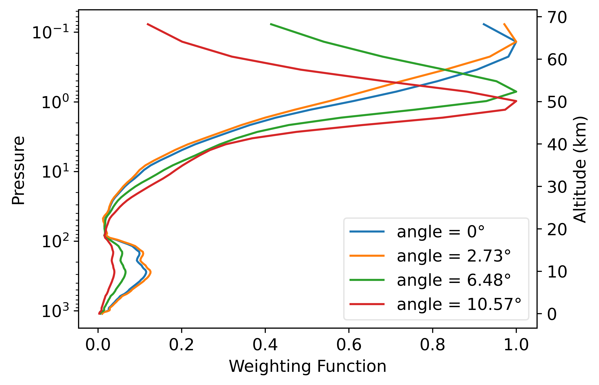

Updated radiative transfer modelling to simulate instruments from the 1970s
the Pressure Modulated Radiometer (PMR) and the Stratospheric Sounding Unit (SSU)
Valentin Jules
Copernicus Climate Change Service
Instrument of the 70s
Objectives
- Simulate the radiometer using LBLRTM
- Modelize the instrument measurement with RTTOV
- ERA-6 re analysis
PMR
Measurements principles

Spectral Response Function

Spectral Response Function

Weighting Functions Nadir, profil83


Weighting Functions Nadir, profil83

Weighting Functions Nadir, profil83
Doppler Scanning
\begin{equation}
\nu = \nu_e \left( 1 + \dfrac{v \cos(\theta)}{c} \right)
\end{equation}
\begin{equation}
\nu = \nu_e \left( 1 + \dfrac{v \cos(\pi/2 - \alpha}{c} \right)
\end{equation}
\begin{equation}
\nu = \nu_e \left( 1 + \dfrac{v \sin(\alpha}{c} \right)
\end{equation}
Doppler Scanning
Doppler Scanning

Doppler Scanning

Doppler Scanning

Doppler Scanning
Doppler Scanning

Doppler Scanning

Doppler Scanning
12 channels : 2 cells \(\times\) 6 angles
RTTOV profils

RTTOV Simulated Brightness Temperature
O-A

Conclusion
- We can use LBLRTM to simulate PMR
- PMR instrument probes in the upper stratosphere
- Doppler scanning must be taken into account
- Further investigations : Adjust atmospheric profiles